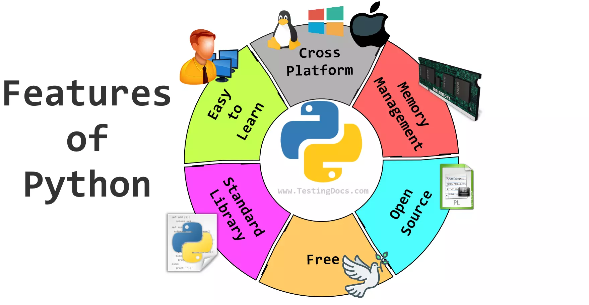

Python is a high-level programming language, which is easy to program and understand and similar to how we speak in English.
Python is used in various applications like development, data processing, data analysis, artificial intelligence, machine learning, deep learning and scientific computing. It is a versatile language that can be used for both simple as well as complex projects.

There is no use of curly braces or semicolons in Python programming language. It is an English-like language. But Python uses indentation to define a block of code. Indentation is nothing but adding whitespace before the statement when it is needed.
def func():
statement 1
statement 2
…………………
…………………
statement N
Python was created by Guido van Rossum. In the late 1980s, Guido van Rossum, a Dutch programmer, began working on Python while at the Centrum Wiskunde & Informatica (CWI) in the Netherlands. He wanted to create a successor to the ABC programming language that would be easy to read and efficient.
In February 1991, the first public version of Python, version 0.9.0, was released. This marked the official birth of Python as an open-source project. The language was named after the British comedy series "Monty Python's Flying Circus".
Python development has gone through several stages. In January 1994, Python 1.0 was released as a usable and stable programming language. This version included many of the features that are still present in Python today.
From the 1990s to the 2000s, Python gained popularity for its simplicity, readability, and versatility. In October 2000, Python 2.0 was released. Python 2.0 introduced list comprehensions, garbage collection, and support for Unicode.
In December 2008, Python 3.0 was released. Python 3.0 introduced several backward-incompatible changes to improve code readability and maintainability.
Throughout 2010s, Python's popularity increased, particularly in fields like data science, machine learning, and web development. Its rich ecosystem of libraries and frameworks made it a favourite among developers.
The Python Software Foundation (PSF) was established in 2001 to promote, protect, and advance the Python programming language and its community.